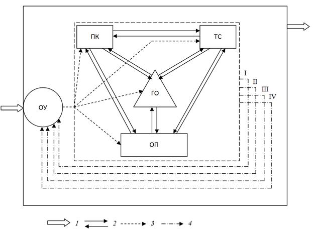

Дополнительный материал:
Владимир Сергеевич Преображенский
Модуль «Территориальная рекреационная система»
В 1972 г. увидела свет работа В.С. Преображенского, И.В. Зорина, Ю.А. Веденина «Географические аспекты
конструирования новых типов рекреационных систем», а в 1975 г. научная общественность страны познакомились с
коллективной монографией «Теоретические основы рекреационной географии» под редакцией профессора В.С. Преображенского.
Эти две работы наметили тренд развития научных исследований в области рекреационной географии и туризма на два
десятилетия вперед.
В истории отечественной рекреационной географии особо выделяется период конца 60-х - начала 80-х гг. В это время
интенсивно проводились полевые исследования, социологические опросы, проходили рекреационно-географические совещания.
Шло развитие молодого научного направления «Рекреационной географии», которое было определено как научное направление
в географии, изучающее территориальные закономерности и особенности деятельности людей, направленные на восстановление
и развитие физических и духовных сил.
Предметом изучения рекреационной географии, сформировавшейся в научную дисциплину в начале 70-х гг. XX в.,
является функционирование территориальной рекреационной системы.
Под территориальной рекреационной системой авторы отечественной рекреационной географии понимали социальную
географическую систему, состоящую из следующих взаимосвязанных подсистем:
- природных и культурных комплексов,
- технических сооружений (инженерных сооружений),
- обслуживающего персонала,
- органа управления,
- отдыхающих (рекреантов).
ТРС характеризовались функциональной и территориальной целостностью (рис. 2).

Рис. 2. Схема территориальной рекреационной системы
(Теоретические основы рекреационной географии, 1975)
ПК - природные и культурные комплексы, ТС - технические системы,
ОП - группа обслуживающего персонала, ОУ - орган управления,
ГО - группа отдыхающих; 1 - внешние связи системы, 2 - связи между
подсистемами, 3 - команды управления, 4 - информация о состоянии
подсистем: I - об удовлетворенности отдыхающих, II - о степени сохранения соответствия природных комплексов
требованиям отдыха,
III - о степени сохранения полезных свойств и возможностях технических систем, IV - о состоянии обслуживающего
персонала
Подсистема «природные и культурные комплексы» представляет собой
ресурсы и условия удовлетворения рекреационных потребностей отдыхающих. Они характеризуются определенной емкостью,
разнообразием, комфортностью, привлекательностью, устойчивостью и некоторыми другими специфическими качествами.
Подсистема «технические системы» имеет двоякую функцию. Во-первых, она обеспечивает необходимые требования
жизнедеятельности отдыхающих и обслуживающего персонала. Во-вторых, - удовлетворяет специфическим рекреационным
потребностям отдыхающих. Характеризуется подсистема «технические системы» показателями емкости, комфортности,
надежности, рядом инженерно-строительных и эксплуатационных характеристик.
Подсистема «группа обслуживающего персонала» имеет одну функцию - обслуживание отдыхающих.
Подсистема «орган управления» контролирует отношения между подсистемами, собирает сведения о текущей емкости
подсистем, их состоянии, наличии материальных и финансовых резервов. Обязательным условием устойчивого
функционирования территориальной рекреационной системы является реализация планирования и регулирования во всех ее
звеньях.
Подсистема «группа отдыхающих» представляет собой центростремительный и центробежный центр территориальной
рекреационной системы, определяет требования к работе других подсистем, которые зависимы от социальных, возрастных,
национальных, а также индивидуальных особенностей отдыхающих.
Гипотеза о территориальной рекреационной системе, выдвинутая В.С. Преображенским, оказалась крайне плодотворной и
была воспринята всеми географами университетов и институтов Советского Союза. Повсеместно начали организовывать
исследования в рамках рекреационной географии, выделять ТРС в своих регионах. В качестве примера приведем лишь
несколько публикаций, дающих представления о географическом охвате рекреационными исследованиями территории РСФСР в
70-е гг.:
Карелия - Соболь И.А. Транспортно-экологические аспекты формирования рекреационных систем Карелии,
Ленинградская обл. - Хромов Ю.Б. Территориальная организация рекреационных систем в Ленинградской области,
Коми АССР - Гладкова И.Г., Гладков В.П. Моделирование рекреационных нагрузок и определение устойчивости
биогеоценозов средней тайги,
Подмосковье - Чалая И.П. Типология рекреационных систем и планировочная организация территории (на примере
Московской области) ,
Северный Кавказ - Хоменко Ю.А. Планировочная организация Северо-Кавказской территориальной рекреационной
системы,
Поволжье - Любовный В.Я., Сметанич В.С. Рекреационные ресурсы Поволжья,
Урал - Девяткова С.Б. Территориальные рекреационные системы, факторы их формирования и развития (на
примере Уральского Прикамья) ,
Сибирь - Лиханов Е.Н. Формирование рекреационных систем на территории Сибири,
Алтай - Малахов О.А. Территориальные рекреационные системы и вопросы охраны природной среды в Горном
Алтае,
Байкал - Кулакова Т.Я. Экологические аспекты рекреационного освоения Прибайкалья,
Приморский край - Селедец В.П. Рекреационная дигрессия травяного покрова чернопихтарников Южного Приморья,
Сахалин - Нефедов В.В. Перспективные рекреационные районы Сахалина.
В процессе становления рекреационной географии был разработан ряд видов научных исследований природных и
социально-экономических компонентов, используемых в туристско-рекреационной деятельности.
Контрольные вопросы к модулю «Территориальная рекреационная система»
1. Дать определение рекреационной географии, с какого времени она
получила развитие?
2. Что является предметом изучения рекреационной географии? Кто
выдвинул гипотезу о территориальной рекреационной системе?
3. Охарактеризовать понятие «территориальная рекреационная система».
4. Дать характеристику подсистем территориальной рекреационной системы.